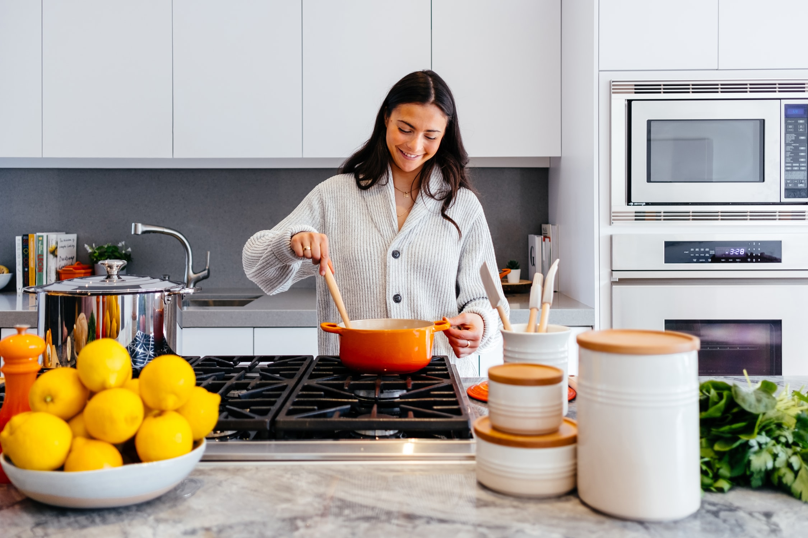

Posted on January 30, 2020
Posted on February 3st, 2020.
Banana Bread is a good breakfast or even a daytime snack. If you know how to bake this delisious cake-bread , your bananas will never be wasted again , especially when they go "bad " what is actually the best way of making the best Banana Bread .
Author: Lana Gasparyan
1 cup granulated sugar
6 tablespoons unsalted butter, room temperature
2 large eggs
3 ripe bananas
1 tablespoon milk
1 teaspoon ground cinnamon
1 teaspoon baking powder
1 teaspoon baking soda
1 teaspoon salt
1 teaspoon vanilla extract
Preheat the oven to 325 degrees F.
Mix the sugar and butter in a large mixing bowl until . Add the eggs , beating well . Add vanilla extract.
Mash the bananas with a fork. Add milk and mix with cream.
In another bowl, mix together the flour, baking powder, baking soda and salt.
Add to cream ingredients, mixing just until flour disappears.
Pour batter into prepared pan .Decorate with slice of manana and few walnuts on top . Bake 1 hour until a toothpick inserted in the center comes out clean. Set aside to cool on a rack for 15 minutes. Remove bread from pan, invert
onto rack and cool completely before slicing.
Enjoy !!!

Lana Gasparyan is creator and author graduated from Culinary Institute of America in Hyde Park in 2010. Total experience 10 year. Lana is originally from Georgia .
Follow us on Instagram , Facebook and Twitter.
Author: Lana Gasparyan